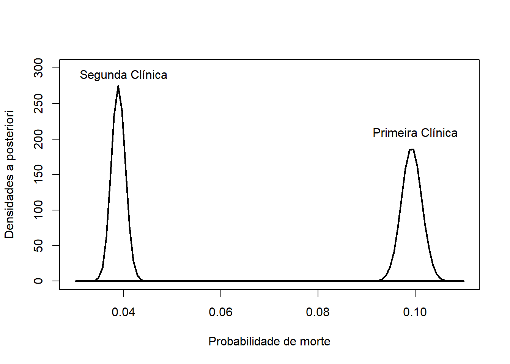
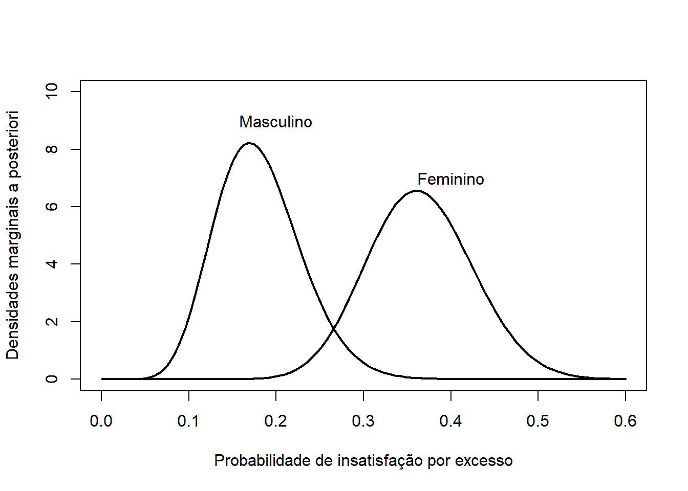

1-pbeta(.4,251,251)[1] 0.999997A distribuição \(F\) é dita pertencer à família Bernoulli, com parâmetro \(\theta\in(0,1)\) se sua função de probabilidade é dada por \[f(x|\theta)=\theta^x(1-\theta)^{1-x},\] com \(x\in\{0,1\}\). É imediato que \(\theta\) representa a probabilidade de \(\{X=1\}\), sendo este evento conhecido como ‘sucesso’ em alguns textos (em contrapartida, \(\{X=0\}\) é conhecido como `fracasso’).
Esta distribuição faz a importante conexão entre variáveis categóricas e aleatórias, tendo papel fundamental na inferência não paramétrica. Por exemplo, seja \(S\) o sexo de um indivíduo selecionado ao acaso. Tal variável é categórica, podendo assumir os resultados \(A=\){feminino} ou \(A^c\). Contudo, pode-se definir a variável \(X=I(A)\), onde \(I(.)\) é a função indicadora, definida por \[I(A)=\left\{\begin{array}{ll} 1,&\hbox{ se $A$ ocorre,} \\ 0,&\hbox{ se $A^c$ ocorre.}\end{array}\right. \] Deste modo \(X\sim\hbox{Bernoulli}(\theta)\).
Como discutido anteriormente, o modelo Bernoulli(\(\theta\)) pertence à família exponencial e sua distribuição conjugada é a Beta\((a,b)\). A distribuição a posteriori é dada por
\[f(\theta|\boldsymbol{x})\propto \theta^{a+\sum_{i=1}^n x_i-1}(1-\theta)^{n-\sum_{i=1}^n x_i+b-1},\] ou seja, \(\theta|\boldsymbol{x}\sim\hbox{Beta}(a+\sum_{i=1}^n x_i,n-\sum_{i=1}^n x_i + b).\) Observe que \(a\) pode ser interpretado como o número de sucessos a priori e \(b\) o número de fracassos. É comum utilizarmos a priori Beta\((1,1)\), que é equivalente à Uniforme(0,1), como priori pouco informativa.
Example 5.1 Um estudo investiga a eficácia de uma nova campanha de vacinação contra a gripe em uma grande cidade. Antes da campanha, a taxa de vacinação na população adulta era de 40%. Após a campanha, uma amostra aleatória de 500 adultos revelou que 250 deles foram vacinados. Os pesquisadores querem determinar se a campanha aumentou significativamente a taxa de vacinação.
Seja \(\theta\) a nova taxa de vacinação. Estamos interessados em testar a hipótese de que \(\theta>0,4\). Considerando que o evento de interesse é um adulto vacinado, teremos que \(x_i=1\) se o \(i\)-ésimo adulto da amostra foi vacinado e \(x_i=0\) em caso contrário. Utilizando a priori Beta(1,1), teremos \(\theta|x_1,\ldots,x_{500}\sim\hbox{Beta}(251,251)\). Deste modo a probabilidade a posteriori da hipótese é
\[P(\theta>0,4|\boldsymbol{x})=\int_{0,4}^1 f(\theta|\boldsymbol{x})d\theta.\] Utilizando o R, obtemos
1-pbeta(.4,251,251)[1] 0.999997logo, a probabilidade de que a campanha aumentou a taxa de vacinação é maior que 99,999%.
Example 5.2 As duas clínicas
Em 1846, Ignaz Philipp Semmelweis se tornou assistente na Primeira Clínica de Obstetrícia do Hospital Geral de Viena, Áustria (algo como o residente chefe). Neste hospital o parto era oferecido de gratuitamente, pois o mesmo serveria de treinamento para os médicos e parteiras.
Naquela época, a febre puerperal era comum e muitas vezes fatal, sendo que a mortalidade variava entre 10% a 35%.
Haviam duas maternidades no Hospital Geral de Viena, conhecidas como a Primeira e a Segunda. A Primeira era considerada um local de morte e era evitada quando possível. Abaixo temos os dados registrados pelo Dr. Semmelweis
\[\begin{array}{c|cc|cc}\hline \hbox{} & \hbox{Primeira} & \hbox{Clínica} & \hbox{Segunda} & \hbox{Clínica}\\ \hline \hbox{Ano} & \hbox{Partos} & \hbox{Mortes} &\hbox{Partos} & \hbox{Mortes} \\ \hline 1841 & 3036 & 237 & 2442 & 86 \\ 1842 & 3287 & 518 & 2659 & 202 \\ 1843 & 3060 & 274 & 2739 & 164 \\ 1844 & 3157 & 260 & 2956 & 68 \\ 1845 & 3492 & 241 & 3241 & 66 \\ 1846 & 4010 & 459 & 3754 & 105 \\ \hline \hbox{Total} & 20.042 & 1.989 & 17.791 & 691 \\ \hline \end{array}\]
Pode-se considerar que cada parto gera duas possibilidades de eventos: a sobrivência ou a morte da mãe. Considere que, dentro da mesma clínica, esses eventos para cada mãe são indepentes e possuem a mesma probabilidade. Seja \(\alpha\) a probabilidade de morte na Primeira Clínica e \(\beta\) a mesma probabilidade para a Segunda Clínica. Então, as funções de verossimilhança para cada probabilidade são
\[\begin{align}L(\alpha)&\propto \alpha^{1989} (1-\alpha)^{18053}\\L(\beta)&\propto \beta^{691} (1-\beta)^{17100}\end{align}\] Utilizando distribuição Uniforme(0,1) como priori para \(\alpha\) e \(\beta\), teremos que
\[\begin{align}\alpha|\boldsymbol{x}&\sim \hbox{Beta}(1990,18054) \\\beta|\boldsymbol{x}&\sim \hbox{Beta}(692,17101)\end{align}\]
Abaixo, mostramos as duas posterioris, de onde podemos concluir que a probabilidade de morte na Primeira Clínica é certamente maior que na Segunda.
curve(dbeta(x,1990,18054),0.03,.11, lwd = 2,ylab='Densidades a posteriori',xlab='Probabilidade de morte',ylim=c(0,300))
curve(dbeta(x,692,17101), lwd = 2, add = T)
text(c(.04,.1),c(290,210),c('Segunda Clínica','Primeira Clínica'))
O Dr. Semmelweis ainda não tinha descoberto o motivo dessas mortes até a morte de seu amigo Jakob Kolletschka, que se cortou acidentalmente com um bisturi durante uma autópsia. Durante a autópsia de Jakob, o Dr. Semmelweis viu semelhanças com as autópsias as mulheres que havia morrido por febre puerperal.
Na Primeira Clínica estudavam os alunos de medicina, que realizavam autópsias. Na Segunda Clínica estudavam as parteiras, que não realizam autópsias. A sua hipótese foi: estudantes de medicina carregavam partículas cadavéricas que causavam a febre puerperal. Com essa hipótese, ele instituiu que todos os médicos deveriam lavar as mãos antes dos partos em maio de 1847. Abaixo, seguem os dados de Junho de 1848 até Março 1849, apenas para a Primeira Clínica
\[\begin{array}{c|cc} \hline \hbox{Período} & \hbox{Partos} & \hbox{Mortes}\\ \hline \hbox{Jun/1847-Dez/1847} & 1841 & 56 \\ \hbox{Jan/1848-Dez/1848} & 3556 & 45 \\ \hbox{Jan/1849-Mar/1849} & 1198 & 41 \\ \hline \hbox{Total} & 6.595 & 142 \\ \hline \end{array}\]
Seja \(\gamma\) a probabilidade de morte por febre puerperal na Primeira Clínica após a instrução de lavagem das mãos. Sua função de verossimilhança é
\[L(\gamma)\propto \gamma^{142}(1-\gamma)^{6453}.\] Assumindo a priori Uniforme(0,1) para \(\gamma,\) teremos que \(\gamma|\boldsymbol{x}\sim\hbox{Beta}(143,6454)\). Abaixo, apresentamos o gráfico das três densidades a posteriori obtidas, mostrando que \(\gamma\) é certamente menor que as outras probabilidades.
curve(dbeta(x,1990,18054),0,.11, lwd = 2,ylab='Densidades a posteriori',xlab='Probabilidade de morte',ylim=c(0,300))
curve(dbeta(x,692,17101), lwd = 2, add = T)
curve(dbeta(x,143,6454), lwd = 2, add = T)
text(c(.01,.04,.1),c(250,290,212),c('Primeira Clínica \n(1847-1849)','Segunda Clínica','Primeira Clínica\n(1841-1846)'))Após a publicação de seus achados, as ideia do Dr. Semmelweis foram amplamente rejeitadas por seus colegas médicos, que se sentiram ofendidos com a sugestão de que poderiam estar causando a morte de seus pacientes. A rejeição e o ridículo que Semmelweis enfrentou levaram a um declínio em sua saúde mental. Ele foi internado no hospício em 1865, onde morreu pouco tempo depois. Morreu em 13 de agosto de 1865, em um hospício em Viena, aos 47 anos. A causa exata de sua morte ainda é debatida, mas a teoria mais aceita é que ele morreu de septicemia, uma infecção sanguínea, após ser espancado pelos guardas do hospício. \[\blacksquare\]
No exemplo anterior foi possível verificar graficamente que as probabilidades de morte por febre puerperal em ambas as clínicas eram distintas. Recordando que as respectivas probabilidades foram identificadas por \(\alpha\) e \(\beta\), era evidente que \(P(\alpha>\beta|\hbox{dados})=1\).
Quando a evidência gráfica não é clara, é necessário calcular tal probabilidade. Sejam \(X_1,\ldots,X_n\) e \(Y_1,\ldots,Y_m\) duas amostras aleatórias independentes com \(X_i|\alpha\sim\hbox{Bernoulli}(\alpha)\) e \(Y_i|\beta\sim\hbox{Bernoulli}(\beta)\). Considerando prioris conjugadas, teremos que \(\alpha|\boldsymbol{x}\) e \(\beta|\boldsymbol{y}\) possuem distribuição beta e são independentes. Para testar uma hipótese do tipo \(H: \alpha>\beta\) é necessário calcular
\[p=P(\alpha>\beta|\boldsymbol{x},\boldsymbol{y}).\] Contudo, podemos definir a variável \(A=\left\{\begin{array}{ll}1,&\alpha>\beta\\ 0,&\alpha\leq \beta\end{array}\right.\) Deste modo, \(A\sim\hbox{Bernoulli}(p)\). Acontece que \(p=E(A)\) e, pela Lei Forte dos Grandes Números, para a sequência \(A_1,A_2,\ldots,\) teremos que \[\frac{1}{B}\sum_{j=1}^B A_j\rightarrow E(A)=p,\;\; B\rightarrow\infty\] Deste modo, se tivermos uma observação da amostra aleatória \(A_1,\ldots,A_B\) é possível calcular \(p\) com boa precisão para \(B\) suficientemente grande. Podemos obter essa amostra via simulação. Esse é o princípio do Método de Monte Carlo.
Método de Monte Carlo Considere o problema de calcular \[p=E(X).\] * Passo 1. Simule \(x_1,\ldots,x_B\) com \(B\) suficientemente grande
\[\frac{1}{B}\sum_{j=1}^B x_j\]
Para calcular \(p=P(\alpha>\beta|\hbox{dados})\) apresentado anteriormente, podemos realizar os seguintes passos:
Passo 1. Escolha \(B\) suficientemente grande
Passo 2. Simule \(\alpha_1,\ldots,\alpha_B\) a posteriori \(\alpha|\hbox{x}\)
Passo 3. Simule \(\beta_1,\ldots,\beta_B\) a posteriori \(\beta|\hbox{y}\)
Passo 4. Calcule
\[\frac{1}{B}\sum_{j=1}^B I(\alpha_j>\beta_j)\]
Example 5.3 Naufrágio do Lusitania (1915)
Em 7 de maio de 1915, durante a Primeira Guerra Mundial, o RMS Lusitania, um luxuoso transatlântico britânico, navegava a cerca de 18 km da costa sul da Irlanda. A bordo, passageiros de diversas nacionalidades, incluindo muitos americanos, desfrutavam de uma viagem que deveria levá-los de Nova York a Liverpool. No entanto, o que era para ser uma travessia rotineira transformou-se em tragédia quando o navio foi torpedeado pelo submarino alemão U-20.
Atingido no lado estibordo, o Lusitania sofreu uma segunda explosão interna, cuja causa ainda é debatida, e afundou em apenas 18 minutos. A rapidez com que o navio submergiu, aliada à dificuldade de lançar os botes salva-vidas, resultou na morte de 1.198 pessoas, entre passageiros e tripulantes. O naufrágio do Lusitania gerou indignação internacional e intensificou a pressão para que os Estados Unidos entrassem na guerra, o que ocorreu dois anos depois.
O número de passageiros que morreram e sobreviveram em cada classe é dado abaixo.
\[\begin{array}{l|cc} \hline \hbox{Classe} & \hbox{Sobreviventes} & \hbox{Mortos} \\ \hline \hbox{Primeira} & 113 & 177 \\ \hbox{Segunda} & 229 & 372 \\ \hbox{Terceira} & 134 & 239 \\ \hline \end{array}\]
Neste exemplo, vamos testar a hipótese de que tripulantes da Classe 1 tinham maior probabilidade de sobrevivência que os dados classes inferiores. Seja \(\alpha,\beta,\gamma\) as probabilidades de sobrevivência das classes 1, 2 e 3, respectivamente, Considerando uma priori Beta(1,1) para cada classe, teremos que a posteriori para a probabilidade de sobrevivência é dada por
O gráfico das posterioris é dado abaixo
curve(dbeta(x, 114,178), lwd = 2, ylim=c(0,20), ylab = 'Densidades das posterioris', xlab = 'Probabilidade de sobrevivência', xlim=c(.2,.6))
curve(dbeta(x, 230,373), add = T, col =2, lwd = 2)
curve(dbeta(x, 135,240), add = T ,col =3, lwd = 2)
legend('topright',c('Classe 1','Classe 2','Classe 3'), lwd =2, col=1:3, bty='n')Vamos simular uma amostra de tamanho \(B=1000000\) das posterioris de \(\alpha,\beta,\gamma\).
B <- 1000000
alfa <- rbeta(B, 114,178)
beta <- rbeta(B, 230,373)
gama <- rbeta(B, 135,240)Vamos testar a hipótese de que a probabilidade de sobrevivência de um indivíduo da Classe 1 foi maior que a de um indivíduo da Classe 2 e 3.
set.seed(123)
mean(alfa>beta)[1] 0.599994mean(alfa>gama)[1] 0.788499Observe que \(P(\alpha>\gamma|\hbox{dados})\approx 0,78\), o que não dá suporte para afirmar que a probabilidade de sobrevivência dos tripulantes da primeira classe foi maior do que o da terceira. \[\blacksquare\]
A distribuição Bernoulli pode ser generalizada para o caso multivariado: considere um evento aleatório com possibilidades \(A_1,\ldots,A_k\). Seja \(X_j=I(A_j)\) e seja \(\theta_j\) a probabilidade do evento resultar em \(A_j\). Então, o vetor \(\boldsymbol{X}=(X_1,\ldots,X_k)\) tem distribuição Bernoulli multivariada, cuja função de probabilidade é dada por \[f(\boldsymbol{x}|\boldsymbol{\theta})=\prod_{j=1}^k\theta_j^{x_{j}},\] onde \(x_j\in\{0,1\}\), \(\sum_{j=1}^kx_j=1\), \(\theta_j\in(0,1)\) e \(\sum_{j=1}^k\theta_j=1\). É importante notar que vetor \(\boldsymbol{\theta}\) tem apenas \(k-1\) parâmetros de fato, uma vez que \(\theta_k=1-\sum_{j=1}^{k-1}\theta_j\). Conjuntos do tipo \[\mathcal{S}^k=\left\{(\theta_1,\ldots,\theta_{k-1}):0<\theta_j<1,0<\sum_{j=1}^{k-1}\theta_j<1\right\}\] são denominados simplex.
Seja \(\boldsymbol{x}_1,\ldots,\boldsymbol{x}_n\) uma amostra de vetores Bernoulli Multivariada(\(\theta_1,\ldots,\theta_k\)), onde \(\boldsymbol{x}_i=\{x_{i,1},\ldots,x_{i,k}\}\). Então,
\[\begin{align}L(\boldsymbol{\theta})&=\prod_{i=1}^nf(\boldsymbol{x}_i|\boldsymbol{\theta})=\prod_{i=1}^n\left(\prod_{j=1}^k \theta_j^{x_{i,j}}\right)=\prod_{j=1}^k \prod_{i=1}^n\theta_j^{x_{i,j}}\\&=\prod_{j=1}^k \theta_j^{\sum_{i=1}^nx_{i,j}}=\prod_{j=1}^n\theta_j^{n_j}\end{align}\] onde \(n_j\) é o número de vezes que ocorreu a categoria \(A_j\). É imediado que
\[L(\boldsymbol{\theta})=\exp\left\{\sum_{j=1}^k n_j\log(\theta_j)\right\},\] o que implica que este modelo pertence à família exponencial. Seu modelo conjugado é a Dirichlet(\(a_1,\ldots,a_k\)), cuja função densidade é \[f(\theta_1,\ldots,\theta_k)=\frac{\Gamma\left(\sum_{j=1}^k a_j\right)}{\prod_{j=1}^k \Gamma(a_j)}\prod_{j=1}^k \theta^{a_j-1},\] onde \((\theta_1,\ldots,\theta_{k-1})\) pertence ao simplex \(\mathcal{S}^k\).
A Dirichlet\((a_1,\ldots,a_k)\) possui as seguintes propriedades:
Da primeira propriedade, concluímos que \[E(\theta_j)=\frac{a_j}{\sum_{i=1}^k a_i},\;\;Var(\theta_j)=\frac{E(\theta_j)(1-E(\theta_j))}{\sum_{i=1}^k a_i+1}.\]
Utilizando o modelo conjugado, a distribuição a posteriori de \(\theta_1,\ldots,\theta_k\) é
\[f(\boldsymbol{\theta}|\boldsymbol{x})\propto \prod_{i=j}^k \theta_j^{n_j+a_j-1}\] ou seja, \(\boldsymbol{\theta}|\boldsymbol{x}\sim\hbox{Dirichlet}(n_1+a_1,\ldots,n_k+a_k)\). Novamente, pode-se utilizar \(a_1=\cdots=a_k=1\) para obter uma priori pouco informativa.
Example 5.4 Imagem corporal
O projeto Estado nutricional e sua relação com a imagem corporal em escolares do município de Manaus foi submetido ao LabEst em 2013. Nele, estudantes identificavam como gostaria que fosse o seu corpo segundo a Escala de Stunkard, apresentada na imagem abaixo. Em seguida, uma série de medidas foram realizadas para determinar a real classificação do estudante. Com base nessas informações, cada estudante foi classificado segundo sua satisfação com o próprio corpo do seguinte modo:
Satisfeito: seu desejo é equivalente ao seu estado atual.
Insatisfeito por excesso: o estudante gostaria ter medidas menores.
Insatisfeito por magreza: o estudante gostaria ter medidas maiores.
Neste exemplo, vamos analisar o recorte dos resultados para alunos entre 16 e 17 anos, diferenciando entre os sexos. As frequências estão sumariadas na tabela abaixo.
\[\begin{array}{c|ccc|c}\hline &\hbox{Satisfeito} & \hbox{Insatifeito por excesso} & \hbox{Insatisfeito por magreza} &\hbox{Total}\\ \hline \hbox{Masculino} & 24 & 10 & 24 & 58 \\ \hbox{Feminino} & 14 & 22 & 24 & 60 \\ \hline \end{array} \] Cada estudante pode assumir uma das três classificações. Sejam \(\alpha_S,\alpha_E,\alpha_M\) as probabilidades de alguém do sexo masculino estar classificado como Satisfeito, Insatisfeito por Excesso ou Insatisfeito por magreza, respectivamente. Então a função de verossimilhança para \(\boldsymbol{\alpha}\) é
\[L(\boldsymbol{\alpha})=\alpha_S^{24}\alpha_E^{10}\alpha_M^{24}.\] Analogamente, fazendo \(\boldsymbol{\beta}=(\beta_S,\beta_E,\beta_M)\), as mesmas probabilidades para o sexo feminino, teremos que
\[L(\boldsymbol{\alpha})=\beta_S^{14}\beta_E^{22}\beta_M^{24}.\]
Utilizando a priori Dirichlet(1,1,1) tanto para \(\boldsymbol{\alpha}\) quanto para \(\boldsymbol{\beta}\), teremos que as respectivas posterioris para \(\boldsymbol{\alpha}\) e \(\boldsymbol{\beta}\) são Dirichelt(25,11,25) e Dirichlet(15,23,25).
As posterioris para \(\alpha_M\) e \(\beta_M\) e são Beta(25,36) Beta(25,38). As estimativas pontuais são 0,40 e 0,39, respectivamente. A imagem abaixo mostra a insatisfação por magreza entre os sexos deve ser a mesma.
curve(dbeta(x,25,36), lwd=2, xlab = 'Probabilidade de insatisfação por magreza', ylab= 'Densidades marginais a posteriori', ylim=c(0,8),xlim=c(.1,.8),col='blue')
curve(dbeta(x,25,38),add = T, lwd=2, col='red')
text(c(.6,.2),c(6,6), c('Masculino','Feminino'),col=c('blue','red'))As posterioris para \(\alpha_E\) e \(\beta_E\) são Beta(11,50)e Beta(23,40). As estimativas pontuais são 0,21 e 0,36, respectivamente. A imagem abaixo mostra que as mulheres em geral parecem possuir maior probabilidade de insatisfação por excesso.
curve(dbeta(x,11,50), lwd=2, xlab = 'Probabilidade de insatisfação por excesso', ylab= 'Densidades marginais a posteriori', ylim=c(0,10),xlim=c(0,.6))
curve(dbeta(x,23,40),add = T, lwd=2)
text(c(.2,.4),c(9,7), c('Masculino','Feminino'))
Podemos então construir a hipótese \(H:\alpha_E<\beta_E\). Abaixo, testamos essa hipótese:
set.seed(123)
B <- 1000000
alfaE <- rbeta(B, 11,50)
betaE <- rbeta(B, 23,40)
mean(alfaE<betaE)[1] 0.990628Com uma probabilidade maior que 99%, há fortes evidências de que mulheres entre 16 e 17 anos se sentem mais insatisfeitas por excesso do que os homens de mesma idade.
Uma empresa farmacêutica desenvolveu um novo medicamento para tratar enxaquecas. Antes do lançamento, eles afirmam que o medicamento alivia a dor em pelo menos 80% dos pacientes. Um estudo independente com 250 pacientes revelou que 180 deles relataram alívio da dor. Os resultados do estudo fornecem evidências suficientes para rejeitar a alegação da empresa farmacêutica?
Uma pesquisa de mercado afirma que 55% dos consumidores preferem a marca A de café à marca B. Uma amostra aleatória de 300 consumidores revelou que 180 deles preferem a marca A. Os resultados da amostra fornecem evidências suficientes para rejeitar a alegação da pesquisa de mercado?
Uma escola afirma que a taxa de aprovação em um exame padronizado é de 70%. Uma amostra de 200 alunos revelou que 120 deles foram aprovados. Os resultados da amostra fornecem evidências suficientes para rejeitar a alegação da escola?
Uma campanha de vacinação contra a gripe foi realizada em uma cidade. Antes da campanha, a taxa de vacinação era de 35%. Após a campanha, uma amostra de 400 pessoas revelou que 180 delas foram vacinadas. Os resultados da amostra fornecem evidências suficientes para concluir que a campanha aumentou a taxa de vacinação?
O artigo Polack et al. (2020) apresenta um estudo clínico de fase 3 randomizado e controlado por placebo que avaliou a eficácia da vacina BNT162b2 (Pfizer-BioNTech COVID-19) em participantes com 16 anos ou mais sem evidências de infecção por SARS-CoV-2. A tabela abaixo apresenta o número de participantes por grupo e o número de casos de Covid-19.
\[\begin{array}{l|cc}\hline \hbox{Grupo} & \hbox{Participantes} & \hbox{Casos de Covid-19}\\\hline \hbox{Vacina} & 18.198 & 8 \\ \hbox{Placebo} & 18.325 & 162 \\ \hline \end{array}\]
Considere que o evento de interesse é contrair Covid-19
Encontre a função de verossimilhança para cada grupo
Utilizando a priori Beta(1,1) para a probabilidade de contrair Covid-19, encontre a distribuição a posteriori para cada grupo
Faça um gráfico das posterioris e verifique se há evidências de que a vacinação é eficaz.
Neste capítulo, abordamos a tragédia do Lusitania. A tabela abaixo acrescenta os dados sobre a tripulação.
\[\begin{array}{l|cc} \hline \hbox{Categoria} & \hbox{Sobreviventes} & \hbox{Mortos} \\ \hline \hbox{Primeira classe} & 113 & 177 \\ \hbox{Segunda classe} & 229 & 372 \\ \hbox{Terceira classe} & 134 & 239 \\ \hline \hbox{Tripulação - abastecimento} & 139 & 167 \\ \hbox{Tripulação - engenharia} & 112 & 201 \\ \hbox{Tripulação - deck} & 41 & 37 \\ \hline \end{array}\]
Compare a probabilidade de sobrevivência entre os indivíduos dos diferentes tipos de tripulação e classes de passageiros, testando as hipóteses necessárias.
Neste capítulo, mostramos que homens e mulheres com idades entre 16 e 17 anos possuem expectativas diferentes em relação ao seu próprio corpo.
Neste exercício, você vai verificar como essas expectativas variam dentro do mesmo sexo. Especificamente:
Teste se há evidências de que os homens possuem probabilidade maior de estarem insatisfeitos por magreza do que satisfeitos.
Teste se há evidências de que as mulheres possuem probabilidade maior de estarem insatisfeitas por excesso do que satisfeitas.